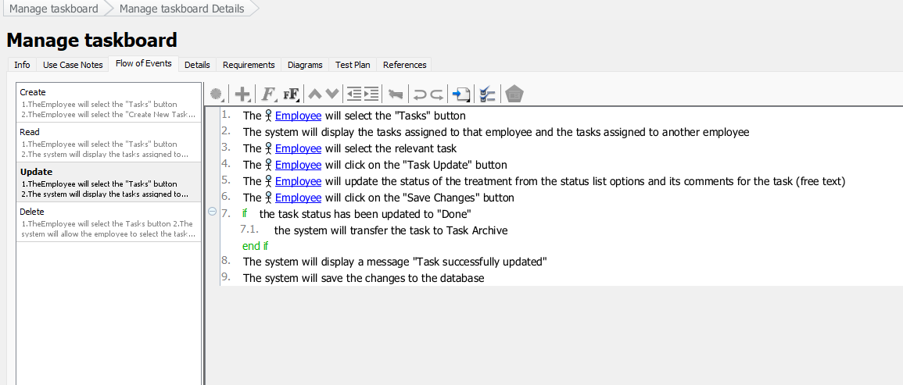
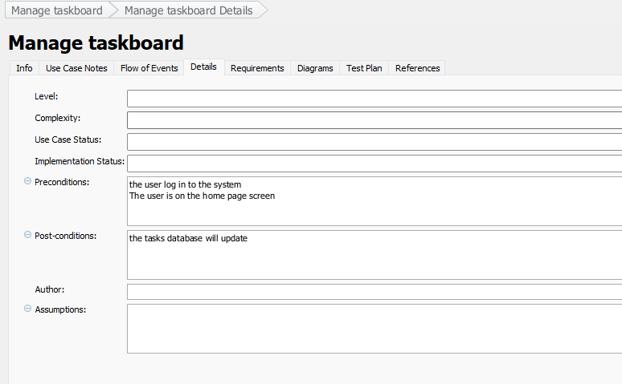
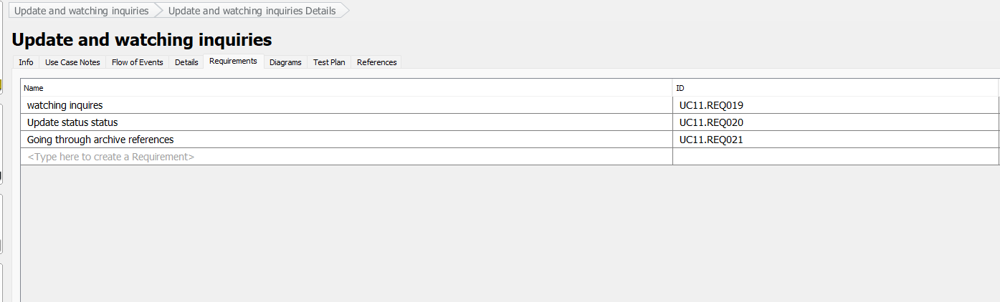
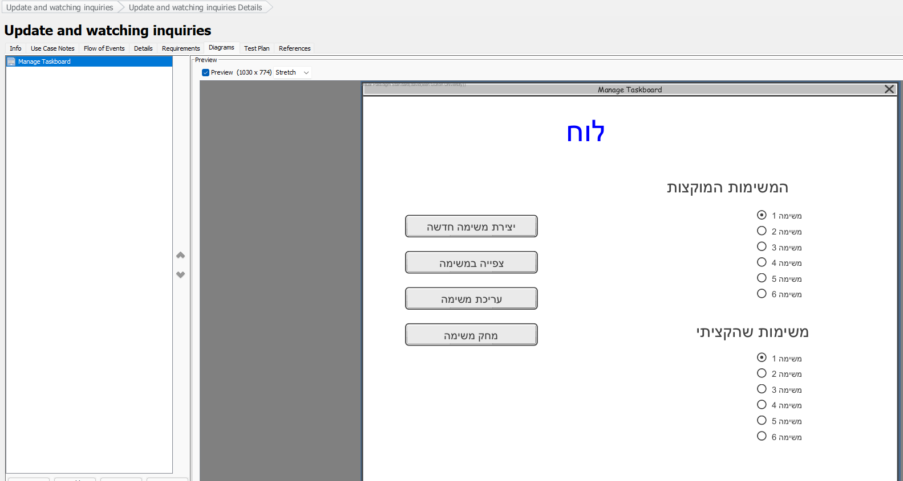

מי ומה. לכל use case יש מזהה (UC10)
ושחקן — מי שיוזם. שימו לב לשפה של הכלי:
VP קורא לשדה "Primary Actors" ומוסיף
"Supporting Actors" — אצלנו יש פשוט שחקנים, וכולם יוזמים.

הזרימה. משמאל — תרחישים: Create / Read / Update / Delete,
תרחיש לכל פעולה (זה ה-CRUD שדיברנו עליו). מימין — הצעדים הממוספרים:
כל צעד אומר מי עושה מה, ותנאי הוא מבנה (if … end if) — לא פרוזה.

החוזה.Preconditions — מה מונח שנכון לפני שמתחילים
(״המשתמש מחובר״ — ולכן login אינו use case).
Post-conditions — מה מובטח אחרי הצלחה (״בסיס הנתונים עודכן״).

עקיבות. ה-use case מקושר חזרה לדרישות שהוא מממש
(UC11.REQ019…). בדיוק הטבלה הממוספרת שכתבנו בתחילת ההרצאה — עכשיו סוגרת מעגל.

אב-הטיפוס. לתרחיש מצורפת סקיצת מסך — קופסאות אפורות, בלי עיצוב.
זה מה שבעל העניין באמת יודע לבקר.